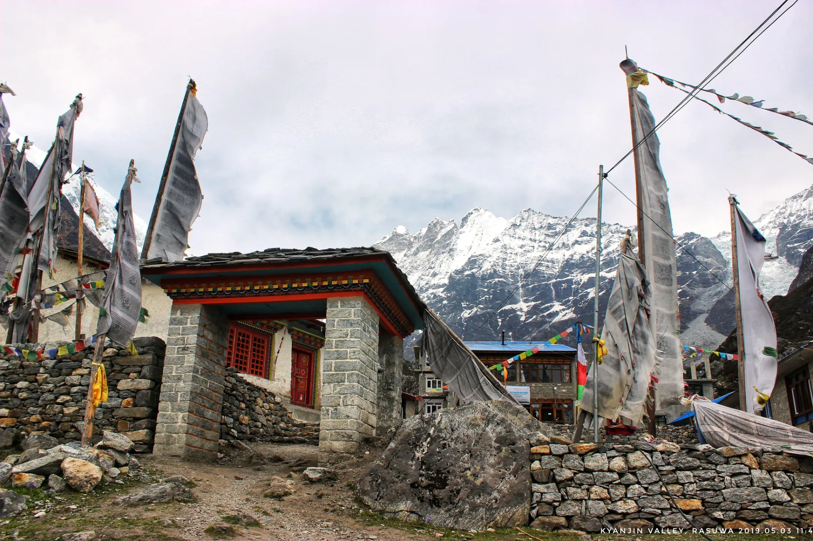
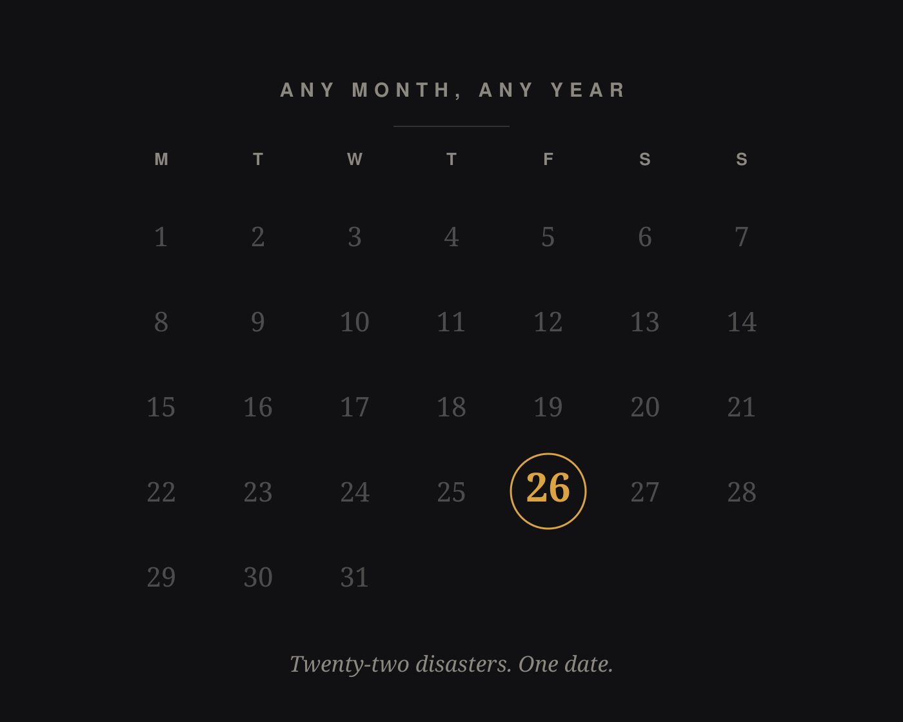
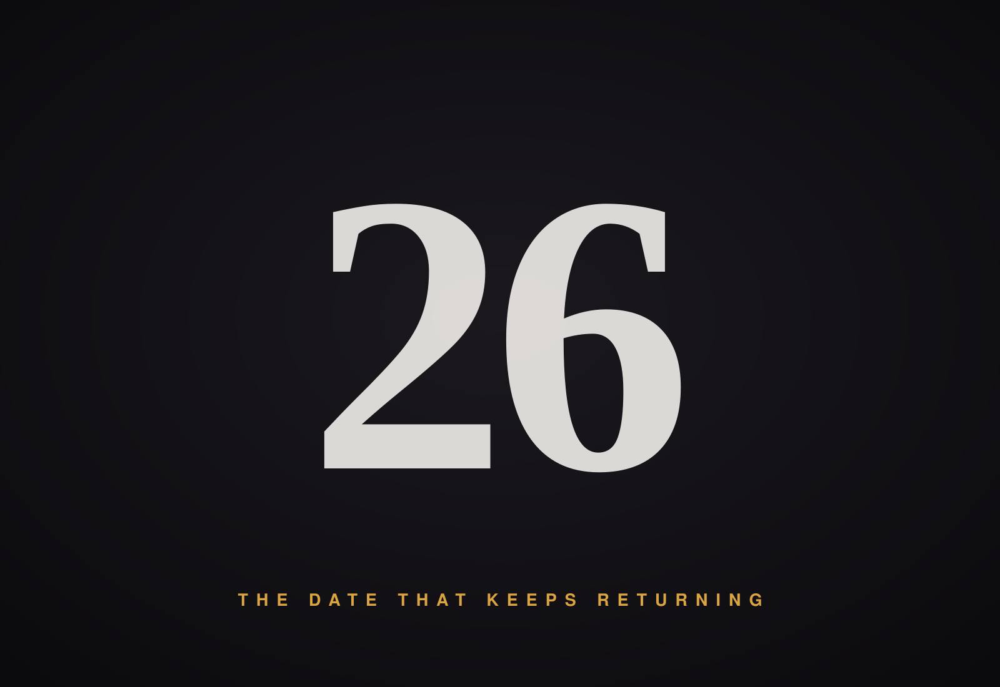
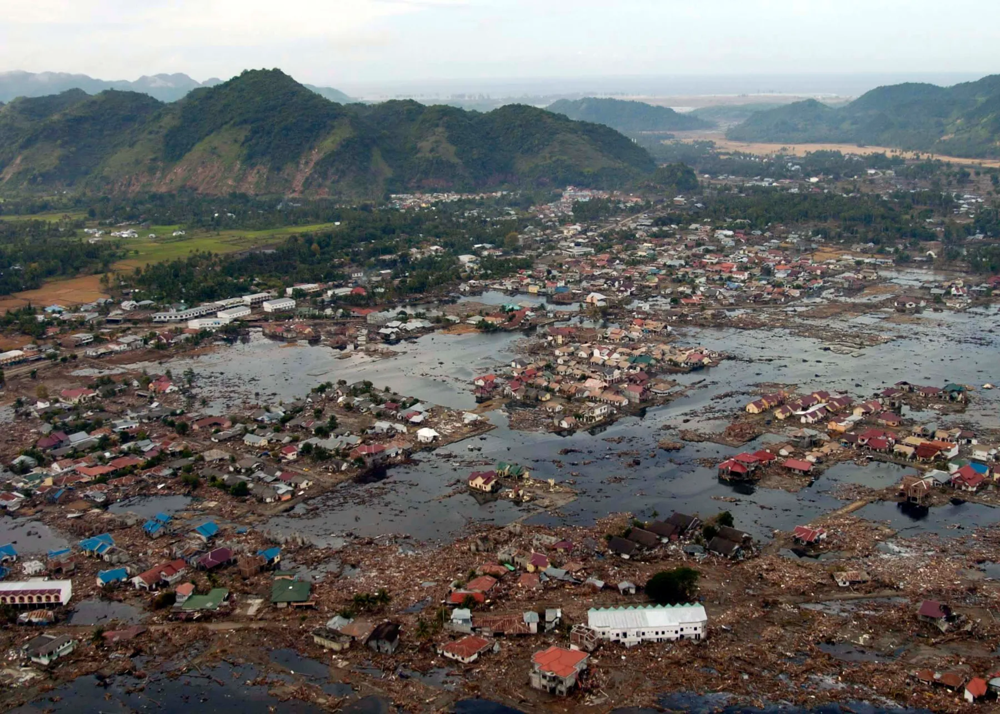
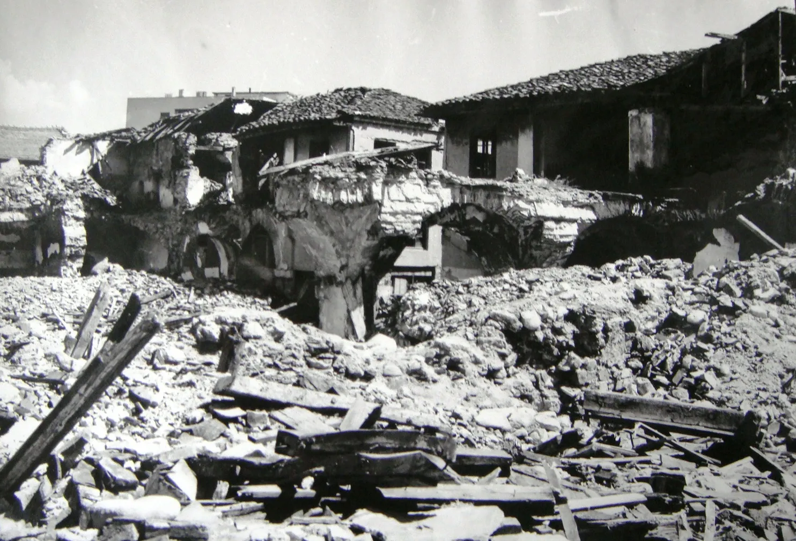
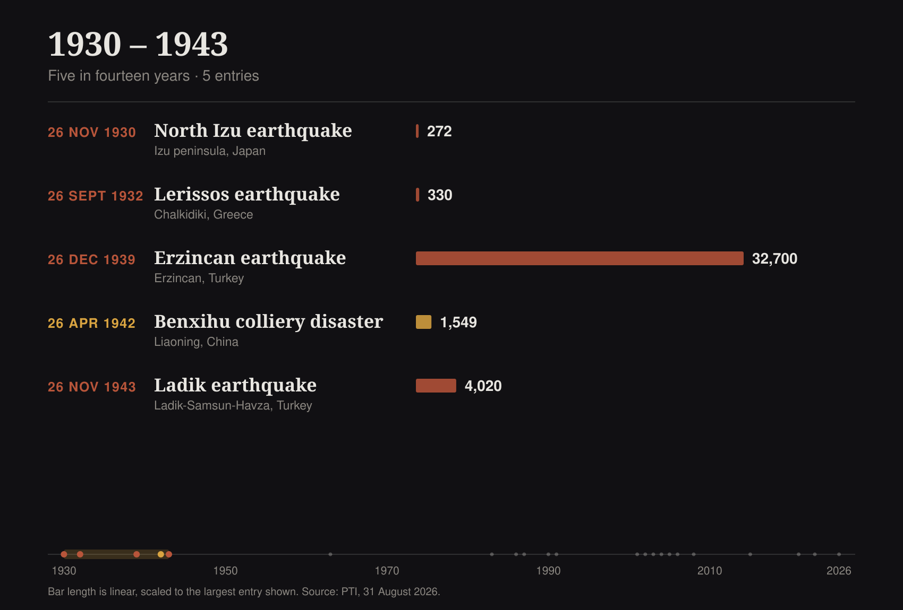
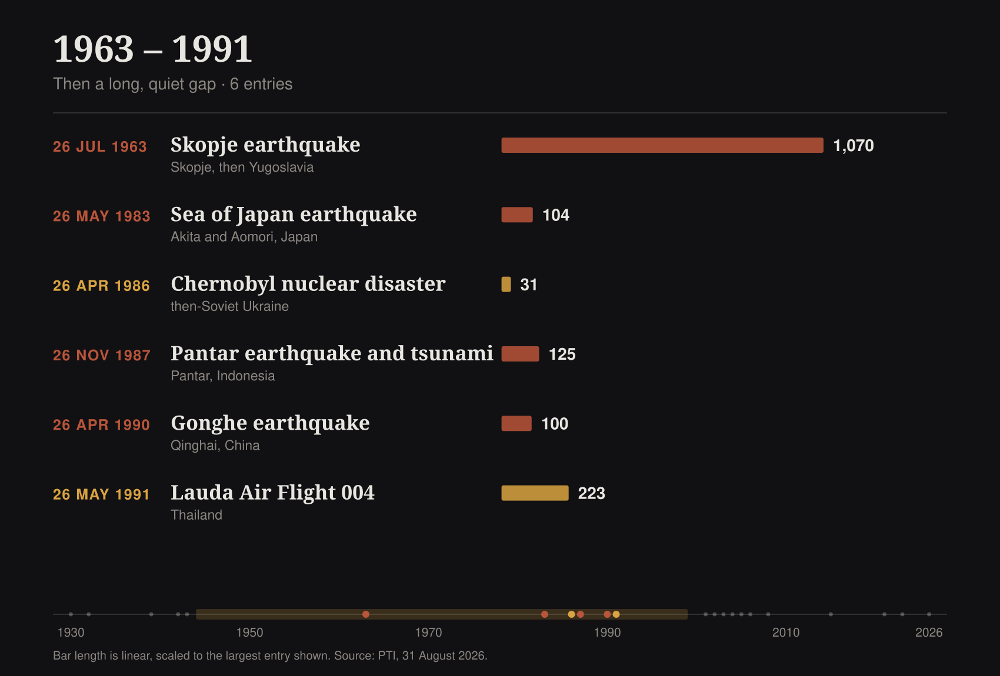
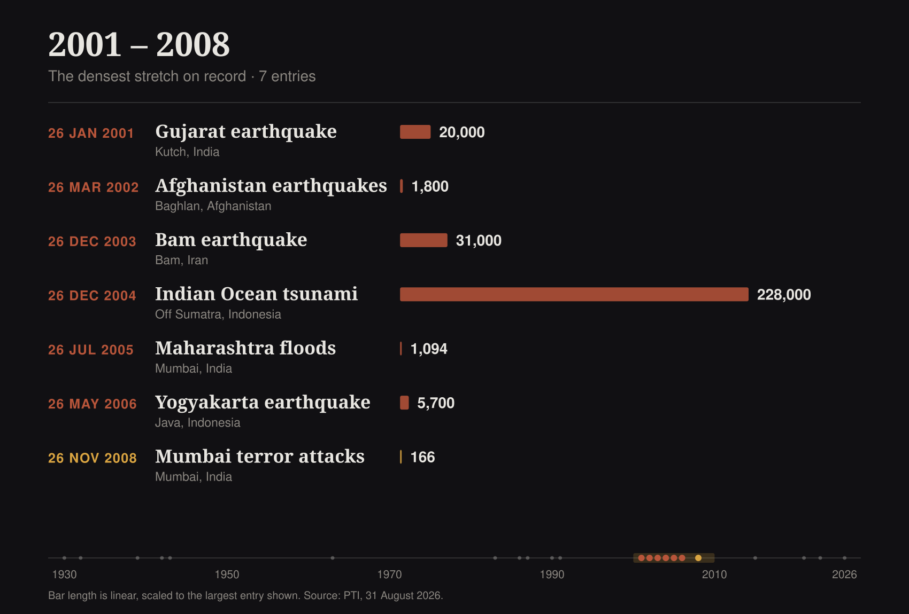
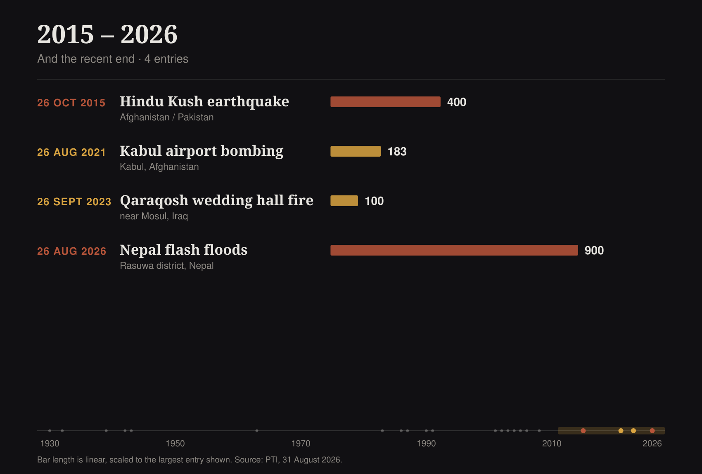

The '26' factor
Nepal’s flash floods are the latest addition to a grim history of disasters that struck on the 26th — twenty-two of them, across ninety-six years.
Is it the jinx of 26? The catastrophic flash floods that tore through Nepal on August 26 are the latest addition to a grim history of disasters that struck on the 26th — right from the 1939 earthquake in Turkey that killed more than 32,700 people to the 2004 Boxing Day tsunami in which 228,000 people were killed, missing and presumed dead.
And it is not just about natural disasters. The date is also when the Mumbai terror siege began on the night of November 26, 2008, and of the Chernobyl nuclear accident on April 26, 1986.


One square on the calendar. Nothing about it is different from the twenty-five before it or the five after.
And yet twenty-two separate catastrophes — earthquakes, tsunamis, floods, a reactor fire, a siege, a mine explosion — have fallen on it since 1930.
Together they account for roughly 330,000 deaths. Here is the record, place by place.


Nepal flash floods
A massive flash flood swept through Nepal’s Rasuwa district and downstream areas after a sudden surge of water and debris entered the Bhote Koshi river system. It inundated settlements, washed away roads and bridges, and damaged hydropower projects.
As of August 31, authorities reported over 900 deaths and nearly 4,500 missing.
Indian Ocean tsunami
A magnitude 9.1 earthquake off the coast of Sumatra triggered a tsunami that swept across every country bordering the Indian Ocean. Indonesia, Sri Lanka, India and Thailand were worst affected.
About 228,000 people were killed or left missing and presumed dead — one of the deadliest natural disasters in recorded history.
Aceh, weeks later. Whole settlements on the Sumatran coast were simply removed.
Bam earthquake
A magnitude 6.6 earthquake destroyed much of the historic Iranian city of Bam. Thousands of buildings collapsed. Estimates of the toll varied, with figures of about 31,000 widely reported.
Arg-e Bam, the mud-brick citadel at the heart of the city. Much of it came down in the quake.
Gujarat earthquake
A powerful earthquake devastated large parts of Gujarat, particularly the Kutch region. More than 166,000 people were injured and around 20,000 killed — on Republic Day.
Kutch, the worst-affected district. The shaking was felt across western India and into Pakistan.
Maharashtra floods
Mumbai received around 944 mm of rain in 24 hours, inundating roads, homes and railway lines and bringing the city to a standstill. 1,094 people were killed across Maharashtra.
Yogyakarta earthquake
A magnitude 6.3 earthquake struck near Yogyakarta on Java. Thousands of homes and buildings were destroyed and more than 5,700 people were killed.
Prambanan, the ninth-century temple complex outside Yogyakarta, was among the structures damaged.
Erzincan earthquake
The oldest entry on this list, and among the deadliest. A magnitude 7.8 earthquake along the North Anatolian fault killed about 32,700 people.
Four years later, almost to the day, the Ladik earthquake struck the same country on another 26th, killing about 4,020.
Skopje earthquake
A magnitude 6.1 earthquake devastated Skopje, then part of Yugoslavia. About 1,070 people were killed and more than 200,000 were left homeless.
Skopje afterwards. The city was substantially rebuilt in the decades that followed.
Those are the eight largest. Eight more natural disasters — in Afghanistan, China, Indonesia, Japan, Greece and the Hindu Kush — also fell on a 26th. All sixteen are marked here.
Every dot is a hundred people
The sixteen natural disasters that fell on a 26th, smallest first. The scale is linear — keep scrolling.
each dot = 100 dead
One dot = 100 reported deaths. Tolls as reported by PTI; several are estimates and Nepal’s remains provisional.
Not only nature
The date does not confine itself to earthquakes and floods. Six of the twenty-two entries were made by people — a reactor pushed past its limits, a bomb in an airport crowd, ten gunmen arriving by sea.
Benxihu colliery disaster
A gas and coal dust explosion tore through the Benxihu coal mine in Liaoning. Carbon monoxide poisoning killed 1,549 miners — one of the deadliest mining disasters in history.
Chernobyl nuclear disaster
Reactor no. 4 exploded during a safety test, releasing large amounts of radioactive material across parts of Europe. The immediate official death toll was 31; long-term deaths attributable to radiation remain a matter of scientific estimation rather than a counted toll.
Reactor no. 4, now under its containment shelter. The exclusion zone around it is still in force forty years on.
Lauda Air Flight 004
A Boeing 767 flying Bangkok to Vienna broke apart over Thailand after an uncommanded deployment of an engine thrust reverser. All 223 people aboard were killed.
Mumbai terror attacks
Ten Lashkar-e-Taiba gunmen launched coordinated attacks across the city, including at Chhatrapati Shivaji Maharaj Terminus and the Taj Mahal Palace Hotel. The siege lasted nearly three days.
166 victims were killed, nine attackers were killed, and more than 300 people were injured.
The Taj Mahal Palace, one of the sites held during the three-day siege.
Kabul airport bombing
A suicide bomber from Islamic State-Khorasan province detonated an explosive near Hamid Karzai International Airport as thousands gathered during the US-led evacuation. At least 183 people were killed, including 170 Afghan civilians and 13 US service members.
The airport during the evacuation, days before the bombing.
Qaraqosh wedding hall fire
Indoor pyrotechnics ignited flammable material at a wedding hall near Mosul. The fire tore through the crowded venue, killing more than 100 people.




The 1930s and 1940s
Five entries in fourteen years, at both ends of the scale: a Greek village, two Turkish earthquakes, a Japanese peninsula, and a coal mine in Liaoning.
1963 to 1991
Then a long, quiet gap. Skopje stands almost alone for two decades before Chernobyl, and the entries that follow are smaller.
2001 to 2008
Seven disasters in eight years — the densest stretch on the record, and the one that contains the tsunami.
2015 to 2026
And the recent end: the Hindu Kush, Kabul, a wedding hall near Mosul, and now Nepal.
The rest of the record
Seven more natural disasters fell on a 26th. They are smaller in the count only.
Hindu Kush earthquake — Afghanistan / Pakistan
26 October 2015. A magnitude 7.5 earthquake struck the Hindu Kush region, affecting Afghanistan, Pakistan and parts of northern India. It reportedly killed about 400 people, most of them in Pakistan and Afghanistan.
Afghanistan earthquakes — Baghlan, Afghanistan
26 March 2002. A series of earthquakes struck northern Afghanistan overnight on March 25–26, devastating parts of Baghlan province. Mud-brick homes collapsed and thousands were left homeless. Early estimates put the toll as high as 1,800, though later assessments varied significantly.
Gonghe earthquake — Qinghai, China
26 April 1990. A magnitude 7 earthquake struck Qinghai province, causing severe damage in the Gonghe region and killing more than 100 people.
Pantar earthquake and tsunami — Pantar, Indonesia
26 November 1987. A magnitude 6.5 earthquake in the Pantar area of Indonesia generated a tsunami. The disaster killed 125 people.
Sea of Japan earthquake — Akita and Aomori, Japan
26 May 1983. A magnitude 7.8 earthquake off northern Japan triggered a tsunami that hit coastal Akita and Aomori. The wave caused most of the casualties: 104 killed.
Lerissos earthquake — Chalkidiki, Greece
26 September 1932. A powerful earthquake struck the Chalkidiki peninsula, severely damaging Lerissos. Hundreds of houses were destroyed and a tsunami was recorded. Historical estimates of the toll range from about 160 to nearly 500.
North Izu earthquake — Izu peninsula, Japan
26 November 1930. A magnitude 7.3 earthquake struck Japan’s Izu peninsula, with landslides and fires adding to the destruction. Around 250 people were killed; later catalogues record 272.
About 228,000 people were killed or left missing and presumed dead — one of the deadliest natural disasters in recorded history.On the Indian Ocean tsunami, 26 December 2004
A note on the date
Dates recur. With thirty-one of them and a century of record-keeping, some number was always going to collect a heavy share of catastrophe, and the 26th has collected this one.
What the list documents is not a property of the date. It is the ordinary arithmetic of a violent century, seen through a single square on the calendar — and, in each of these twenty-two entries, a great many people who did not come home.